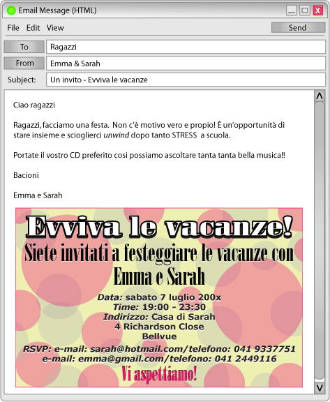

Sarah and Emma have organised the party invitation and written the following accompanying email.
Ciao ragazze
Grazie dell’ l’invito. È un’ idea fantastica!! Non ci credo!! Proprio il giorno quando non posso venire io!!!! Che rabbia! Devo andare con la famiglia per la solita vacanza in campagna. Che noia!
Ho tantissima voglia di venire alla festa ma i miei insistono che devo andare con loro. Niente da fare! Che seccatura!
Mi dispiace tantissimo!!
Forse organizzo una festa anch’io quando ritorno per il mio compleanno.
Buon divertimento! Fatemi sapere come va la festa. Mi raccomando, fate tante foto! Se avete voglia mi potete spedire qualcuna via MMS!
Bacioni
Natasha
| When making, accepting or refusing an invitation, you will probably use the verbs volere, potere and dovere to do something. These are generally grouped together and are often called modal verbs.
These verbs are generally used before another verb. Per esempio:
|
 |
Ciao ragazze
La festa è un’ idea BELLISSIMA!!! Io ci sono senz'altro! Ho già un altro impegno quel giorno ma non fa niente. Lo posso rimandare (postpone) per un'altra volta senza problemi. Non voglio assolutamente perdere quest’occasione!!!
Mi piace molto l’idea dei cocktail! Niente da dire!! Siete molto chic!!!!
Grazie mille ragazze.
Ci vediamo
Non vedo l’ora!!
Salutoni
Travis
Fatemi sapere se avete bisogno d’una mano.
Sam leaves a message on Emma's voicemail. Click on the green button to listen to Sam's message.
| Crystal telephones Sarah in response to the party invitation. Listen to their conversation. |
Complete the exercises in worksheet A2.2 related to each of the reply above.